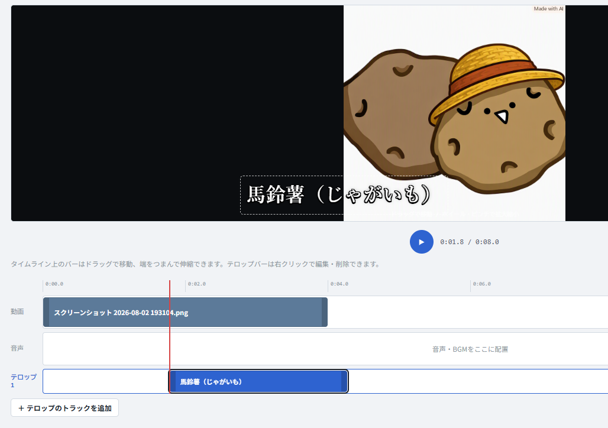
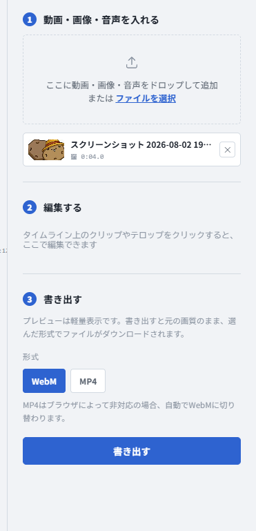

カット・字幕・速度・音量・逆再生まで、ログインなしで制作できる。アカウント登録不要。


動画・画像・音声・テロップをトラックに並べ、位置も長さもドラッグで調整できます。
タイムライン上のクリップをドラッグして、好きなタイミングに移動できます。動画・画像と音声をずらして重ねることも可能です。
クリップの両端をつまんでドラッグするだけで、長さを伸縮できます。画像は、表示する範囲の切り抜きもできます。
0.25倍〜3倍の速度プリセットと、0〜200%まで増幅できる音量調整に対応しています。
選択したクリップをワンタップで逆再生に変換できます（音声はミュートされます）。
テキスト内容、表示の開始・終了時間を数値で指定でき、映像上のドラッグで位置も自由に調整できます。トラックは必要な分だけ追加できます。
編集中のプレビューは軽さ優先で表示し、書き出し時には元の画質のまま指定した形式で仕上げられます。WebM・MP4に加えて、音声だけのMP3としても書き出せます。
本格的な組み立てを、ブラウザだけで。細かい調整はしっかりできるようにしつつ、余計な設定画面は増やしていません。詳しい内容はページ下部の「サービス概要」からご覧いただけます。
開発に協力してくれた方、開発のフィードバックを送ってくれた方
プレビューは軽量表示です。書き出すと元の画質のまま、選んだ形式でファイルがダウンロードされます。